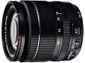

器材库 > APS画幅镜头 > XF 18-55/2.8-4 R LM OIS

详细规格
镜头类型
标准变焦镜头
发布日期
2012-09-06
厂家推荐价格
699.95 （美元）
焦距
18mm-55mm
等效35mm画幅焦距
27mm-84mm
最大光圈
f/2.8-f/4.0
最小光圈
f/22
视角（对角）
79.1° - 28.4°
镜头结构
14片/10组
非球面镜片
3片
低/超低色散镜片
1片
光圈叶片
7片
最近对焦距离
广角：30cm;长焦：40cm
最大放大倍率
0.08 - 0.15
滤镜口径
58mm
镜头卡口
Fujifilm X
防抖
是
颜色
黑色
尺寸
65 x 70.4mm
重量
310g
防腐木头2015-08-12 16:094.33 分
操作性 4.50耐用性 4.50性价比 4.50解像力 4.00色彩还原 4.00机械结构 4.50
wwbg2015-05-23 16:084.67 分
操作性 4.50耐用性 4.50性价比 4.50解像力 4.50色彩还原 5.00机械结构 5.00
我用美能达2015-03-05 15:574.33 分
操作性 4.50耐用性 4.50性价比 5.00解像力 4.00色彩还原 4.00机械结构 4.00
花落花无常2015-01-10 22:214.25 分
操作性 4.00耐用性 4.50性价比 4.50解像力 4.00色彩还原 4.00机械结构 4.50
nylon2015-01-07 14:384.25 分
操作性 5.00耐用性 4.00性价比 4.00解像力 4.50色彩还原 4.50机械结构 3.50
wuxun2014-09-02 20:524.67 分
操作性 4.50耐用性 4.50性价比 5.00解像力 4.50色彩还原 5.00机械结构 4.50
我用美能达2014-07-11 14:004.67 分
操作性 5.00耐用性 4.50性价比 4.50解像力 4.50色彩还原 5.00机械结构 4.50
anson5342014-02-12 13:344.08 分
操作性 5.00耐用性 4.50性价比 2.50解像力 4.50色彩还原 4.00机械结构 4.00
peter2013-12-01 22:063.92 分
操作性 3.50耐用性 3.00性价比 4.00解像力 5.00色彩还原 5.00机械结构 3.00
remando2013-08-31 13:494.08 分
操作性 4.50耐用性 4.00性价比 3.00解像力 4.50色彩还原 4.50机械结构 4.00
manumotive2013-08-14 16:514.08 分
操作性 4.00耐用性 4.00性价比 3.50解像力 4.50色彩还原 4.50机械结构 4.00
liuzhangping2013-06-12 19:374.67 分
操作性 5.00耐用性 4.50性价比 5.00解像力 5.00色彩还原 4.50机械结构 4.00
onebyone842013-05-02 10:293.75 分
操作性 4.00耐用性 4.00性价比 3.50解像力 3.50色彩还原 4.00机械结构 3.50
挡不住2013-02-03 11:434.5 分
操作性 4.50耐用性 4.50性价比 3.50解像力 5.00色彩还原 5.00机械结构 4.50
产品图 / 样片
评测 / 相关文章
- ［资讯］富士X系列数码相机及变焦镜头更新固件 （存档）
- ［资讯］支持X-E2对焦系统 富士公布6款镜头新固件 （存档）
- ［资讯］富士X-E2官方样张欣赏 （存档）
- ［资讯］富士公布XF卡口18-55镜头最新固件 （存档）
- ［资讯］富士X系列XF镜头产品线扩大 （存档）